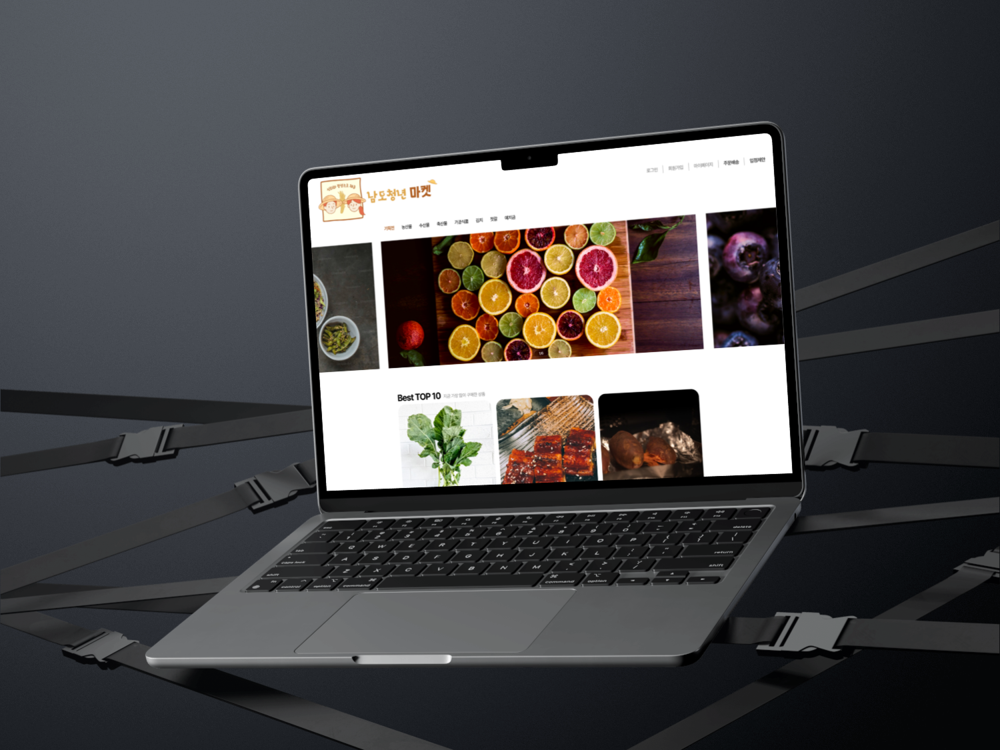
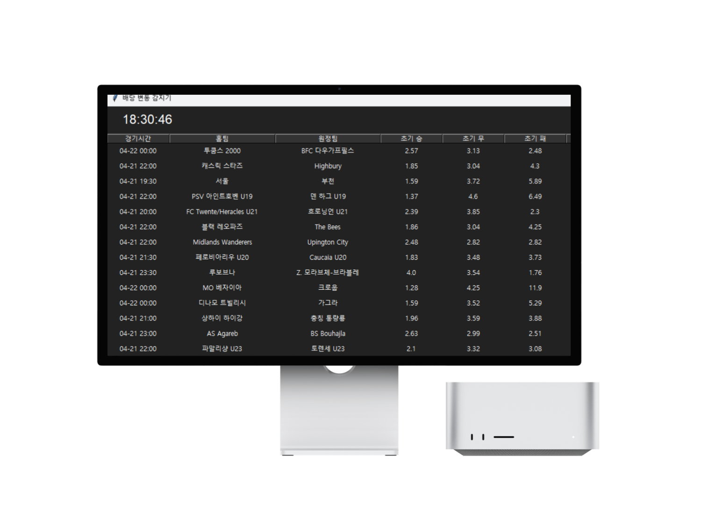
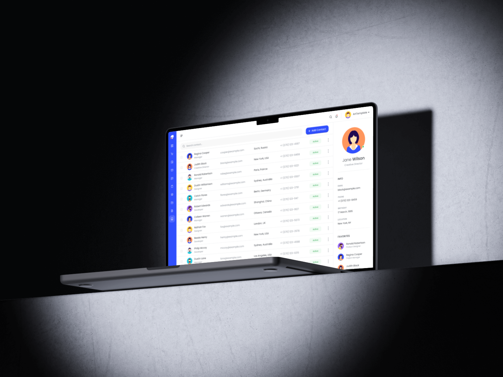

윤성현 포트폴리오
소프트웨어 개발자
소개 글
농수산물 기상정보 데이터를 기반으로 유통·판매 데이터를 분석한 경험이 있으며, 생산 공정 데이터 처리와 상태 관리 로직을 담당하며 시스템 유지보수 및 기능 개선을 수행했습니다. 또한 기술 문서화를 통해 운영 효율성과 향후 대응 체계를 구축한 경험이 있습니다.
IoT 센서를 활용한 실시간 데이터 수집 및 모니터링 환경을 구축하고, 수집된 데이터를 기반으로 PoC 단계에서 최적화된 데이터를 도출하기 위해 고민했습니다.
이러한 경험을 바탕으로, 더 나은 해결 방법을 찾기 위해 지속적으로 학습하고 있습니다.
이력
1. 증권사 랜딩 페이지 및 고객 관리 시스템 구축
- 증권사 랜딩 페이지 개발 및 고객 유입 구조 설계
- 이메일 연동을 통한 리드 수집 및 DB 저장 구조 구현
- 고객 지원 관리 시스템(문의/상태 관리) 개발
2. 식품 도매업 ERP 시스템 구축
- 엑셀 및 카카오톡 기반 수기 업무를 웹 시스템으로 전환
- 주문/재고 데이터를 클라우드 기반으로 통합 관리
- 업무 프로세스 디지털화로 데이터 관리 효율 개선
3. 스포츠 경기 일정 커뮤니티 서비스 개발
- 외부 스포츠 API를 활용한 경기 일정 및 정보 제공 기능 구현
- 대용량 API 호출 구조 최적화 및 병목 구간 개선
- 데이터 처리 성능 개선 경험 O(n) → O(log n) 수준으로 개선
4. B2B 도매몰 시스템 개발
- ERP 및 외부 API 연동 기반 주문/재고 관리 시스템 설계
- 트랜잭션 처리 및 데이터 정합성 확보 로직 구현
- 대용량 데이터 처리 및 서비스 성능 개선 경험
1. IoT 디바이스 연동 및 실시간 모니터링 시스템 구축
- 디바이스 데이터를 서버로 수집하고 웹에서 실시간 상태 확인 시스템 구현
2. PoC 테스트 환경 설정 및 최적화 연구
- 네트워크 및 데이터 수집 주기 분석을 통한 안정적 환경 구축
3. 수산 분야 정부 과제 참여
- 기술 조사 및 문서화, 프로젝트 진행 지원
1. 생산 공정 데이터 처리 및 상태 관리 로직 백엔드 개발
- 공정 진행/완료 상태를 관리하는 로직 구현 및 생산 데이터 흐름 처리
- MES 시스템 성능개선: 대용량 데이터 처리 및 정제에 소요 되는시간 60배 개선
2. MES 시스템 유지보수 및 기능 개선
- 기존 기능 오류 수정 및 운영 효율을 위한 기능 개선 작업 수행
3. MES 시스템 관련 프로젝트 관리 및 기술 문서화
- 프로젝트 산출물(보고서, 기술 문서) 작성 및 데이터 정리
- 개발 내용 문서화 및 프로젝트 진행 관리 지원
포트폴리오

소규모 사업자를 위한 폐쇄형 B2B 도매몰로, 상품 조회부터 주문·배송 상태 관리까지 전 과정을 통합 구현

스포츠 API를 활용하여 경기 일정 및 배당 정보를 제공하고, 커뮤니티 기능을 통해 사용자 간 의견 공유가 가능한 서비스

배당 데이터를 기반으로 승률을 계산하는 확률 로직 구현
각 배당 값의 역수를 활용하여 기본 확률 산출 후, 전체 합을 기준으로 정규화 처리
정규화 공식: p = (1 / odds) / Σ(1 / odds)
계산된 확률 중 가장 높은 값을 기준으로 승리 예측 결과 도출

랜딩 페이지에서 예약 및 상담 신청 데이터를 DB에 저장하고, 관리자 시스템에서 확인 및 관리할 수 있도록 구축
Figma를 통해 UI/UX 및 프로토타입 확인 가능